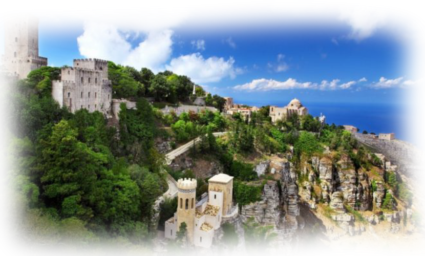

Średniowieczne miasto położone na górze. Podczas spaceru, można tam dosłownie "chodzić w chmurach". Słynie ono również z ciastek genovessi. Jednym z najlepszych miejsc, by ich spróbować, jest stara, tradycyjna cukiernia Pasticceria Maria Gramatico. Już sama podróż kolejką linową, konieczna, by dostać się do tego miasta, jest wielką atrakcją - widoki na Trapani, wyspy Egady i Saliny zapierają dech w piersiach!